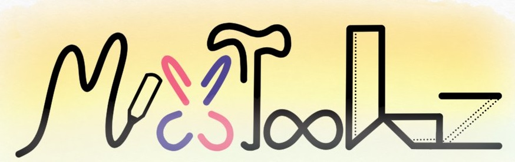

Choose file
>>>>>>> 1e3f86db33fd47ee9bf6ec44c977cfeeee22f7d8 window.html2canvas = html2canvas; window.jsPDF = window.jspdf.jsPDF;
Submit
<<<<<<< HEAD ======= 
MixToolz is a set of useful tools edit pdf or images.
>>>>>>> 1e3f86db33fd47ee9bf6ec44c977cfeeee22f7d8